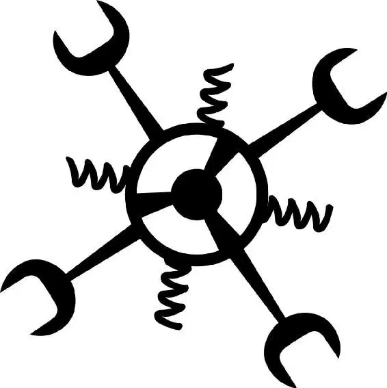

Excitement pulsed through a packed stadium where thousands of revved-up fans gathered to watch the Dinoco 400—the biggest race of the year. They honked their horns and waved their flags in support of their favorite racers. The winner would receive the Piston Cup trophy and be crowned champion for the entire season!
While more fans cheered outside, Lightning McQueen, the rookie, was parked in the back of his posh trailer, trying to psych himself up for the race. It had been a huge year for Lightning. He had exploded onto the racing scene like a stick of dynamite, and he already had an impressive list of wins and top finishes. He knew that he had a good shot at winning the Dinoco 400, and if he did, he would be the first rookie in history to do it. Lightning felt his rpm increase at the thought.
“Focus.” He concentrated hard. “Speed. I am speed. I eat losers for breakfast. I am Lightning.” He had two things on his mind: winning and all the perks that came with it, including the Dinoco sponsorship. The sponsorship meant that Dinoco would pay Lightning a lot of money to compete in races.
“Hey, Lightning,” called Mack. He was Lightning’s loyal trailer driver. “You ready?”
Lightning could feel the roar of the crowds in the stands as his tires buzzed.
“Oh, yeah!” The sleek red race car revved his engine. “Lightning’s ready.”
Cameras flashed across the stands like fireworks as Lightning rolled off the rear of his trailer. He made sure he gave them a good look at his lucky lightning bolt sticker and the number 95 on his side.
“Ka-chow!” he called out as his grill flashed across the stadium’s giant video screen.
Lightning made his way to the track. His competitors were waiting. There were more than forty other cars in the race, but Lightning McQueen knew that he had to worry about only two of them. Strip Weathers—also known as The King—had won more Piston Cups than any other car in history. He also had been Dinoco’s golden boy for years, getting all those big paychecks. This would be his last race before retiring. Lightning was sure that The King wanted to go out on top, and he still had the speed to do it.
And then there was Chick Hicks. He was famous for battling through the line—bashing any car who stood in his way. He had never managed to beat The King, though. He was more determined than ever to win and begin a new era—the Chick era.
“Bob, my oil pressure’s through the roof right now!” cried Darrell Cartrip, one of the race announcers. Poor Darrell was in danger of overheating as the green flag dropped. The three rivals lurched into high gear, launching the greatest race of the decade as they roared across the starting line.
“Right you are, Darrell,” Bob Cutlass agreed as he watched the action from the announcers’ booth. “The winner of this race will win the season title and the Piston Cup!”
“The legend, the runner-up, and the rookie,” Darrell said. “Three cars, one champion.”
Lightning McQueen poured on the speed as The King’s sleek tail fin flashed around the track with Chick right behind it. Lightning punched the gas and flew ahead of Chick. But Chick Hicks wasn’t about to lose this race to a rookie. Coming up fast, he slammed Lightning’s rear and spun him onto the infield.
The crowd gasped as Lightning whirled out of control on the grass.
Lightning recovered quickly, tearing up the field as he zipped back onto the track. But now he was in last place! He pushed hard to make up the time.
Still, Chick wasn’t going to let Lightning close in on him. He wasn’t taking any chances. “Dinoco is all mine!” he cried as he slammed into the car beside him, sending it spinning out of control. In an instant, other cars began to crash into a pileup. “Get through that, Lightning!” With a confident sneer, the ruthless race car headed into the pits for fuel and service.
Lightning tried to go around the wreckage, but it was impossible. With no other choice, he did the only thing he could think of: he went through it! Dodging rubble and smoke, Lightning moved spectacularly, gliding between stopped vehicles and leapfrogging into the air over a pile of cars.
“Lightning made it through!” shouted Chick’s crew chief.
And Lightning didn’t stop. While everyone else headed into the pits, he kept rolling … right into first place!
“Woo-hoo!” Lightning cried.
“You know, the rookie just fired his crew chief,” Darrell announced. “That’s the third one this season!”
“Well, he says he likes working alone, Darrell!” Bob said.
Chick and The King bolted out of pit row and didn’t waste any time in trying to catch up with Lightning. The laps flew by, and it looked as if no one would beat him. Finally, Lightning headed into the pits for fuel. He couldn’t win the race on fumes. “No, no, no—no tires!” he shouted as his crew tried to replace his worn tires. There wasn’t any time. “Just the gas!”
“Looks like it’s all gas ’n’ goes for Lightning today!” Darrell observed as he peered down at pit row below him. “Now, normally I’d say that’s a short-term gain, long-term loss, but it sure is working for him.”
The frenzied crowd’s excitement grew as the contenders sped around the track. Then the white flag waved.
LAST LAP, read the stadium’s giant video monitor. “Checkered flag,” Lightning said to himself, “here I come.”
Ka-blam!
“Oh, no,” Darrell cried as he watched the rookie lose speed. “Lightning has blown a tire!” Chick and The King pounded ahead, making up time with every second. But Lightning didn’t give up. He plunged forward…
Ka-blam!
He lost another tire!
“Come on!” Determined to win, Lightning struggled forward, limping on his rear wheel rims.
“I don’t believe what I’m watching!” Darrell cried. “Lightning McQueen is a hundred feet from his Piston Cup—”
“The King and Chick are coming on strong!” Bob shouted. “Lightning’s nearly there, but Chick and The King are almost caught up!”
Lightning dragged himself forward. He was inches away from crossing the finish line—and making history. He could hear Chick and The King coming up behind him. In a last-ditch effort, Lightning took a giant leap and slid forward. He even stuck out his tongue to gain an extra inch.
“It’s too close to call!” Bob announced as he gaped at the photo finish. “The most spectacular, amazing, incomprehensible, unequivocably unbelievable ending in the history of the world, and we don’t even know who won!”
